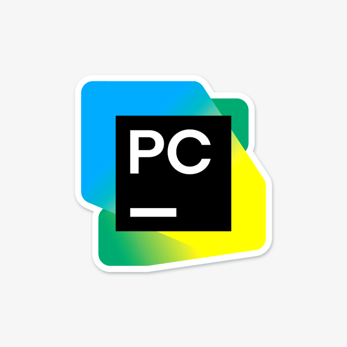

Lower CASE ehk alumise taseme vahendid keskenduvad tarkvara praktilisele teostusele.
Alumise taseme tööriistade abil saab mudelitest ja skeemidest tegelik tarkvaratoode. Need
tööriistad toetavad andmebaasi struktuuri ja koodi genereerimist, testimist,
koodi versiooni- ning konfiguratsioonihaldust ja samuti pöördprojekteerimist.
Lower CASE vahendid on olulised ka vigade leidmiseks ja parandamiseks, sest nende abil on
võimalik tarkvara erinevatel etappidel testida, mis tagab selle kvaliteedi.
Paljud alumise taseme vahendid ka automatiseeritud lahendusi, mis aitavad arendajatel
vähendada käsitsi tehtavat tööd, mis omakorda suurendab kogu arendusprotsessi efektiivsust.
Tänapäeval on siiski üha olulisem, et erinevad tööriistad oleksid omavahel integreeritud. Erinevatel
arendusetappidel loodud dokumentatsioon, mudelid, koodid, testid jms peavad olema omavahel seotud,
et tagada sujuv ja loogiline arendusprotsess, mistõttu on kaasaegsetel tööriistadel sageli ülesehitus
selline, et need sisaldavad nii ülemise kui ka alumise taseme funktsionaalsust.
See võimaldab arendusmeeskonnal töötada ühtsel platvormil, mis seob vajalikud vahendid ühes kohas.

Allikas (eucip)